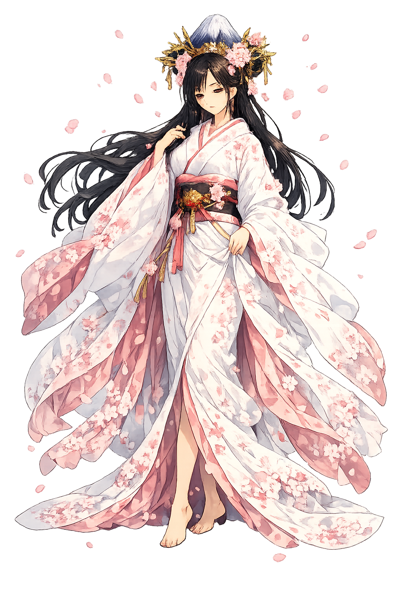

Unicode restoration and ASCII comparison
Honshū
The name survives only in scholarly transliteration. Honshū is the standard Japanese romanisation, documented in academic sources — “'Main island' (本州)”. Its macron-length vowels preserve distinctions lost in plain ASCII.
The original script for this japanese name has not yet been added to PUNICODEX. The form shown is a scholarly transliteration.
honshu
Reduced to plain honshu, the name loses everything that made it specific: macron-length vowels. What remains is an ASCII string that machines can parse but that no longer speaks with its original voice.
Honshū
The Unicode restoration recovers what ASCII flattened. Honshū restores macron-length vowels, returning the name to its original written dignity. The domain encodes to Punycode, but the browser displays the truth.
Honshū.com → xn--honsh-pfb.com
The non-ASCII characters in Honshū are encoded while the ASCII remains visible. To the DNS, it is Punycode. To humanity, it is Honshū.
How Honshū is preserved in writing
A bespoke provenance study for Honshū is being prepared by the PUNICODEX scholarly team.
Contribute scholarly provenance →How Honshū was spoken
The Heartland, the Capitals, and the Spine of Japan
Honshū is the island that became a civilization: largest of the Japanese archipelago, home of every historic capital from Nara to Kyōto to Edo-Tōkyō, and the ground on which the Jōmon, the Yayoi, and the Yamato state built the longest continuous imperial tradition on earth.
The sacred cone at the island's heart — climbed, painted, and worshipped for a thousand years.
Nara, Kyōto, Kamakura, Edo: every seat of Japanese power stands on this one island.
The Seto Naikai — the sheltered water-road that bound the heartland together.
The "home provinces" around the Nara basin: the kernel from which the state grew.
Stories of Honshū
Honshū's mythology is the national charter itself: the Kojiki's island-birth, the sun goddess's gift of the land, and the descent of her grandson to rule it.
The Kojiki opens on the heavenly bridge: Izanagi and Izanami stir the ocean with the jewelled spear, and from the brine dripping from its point the first island coagulates. Descending, they wed and give birth to the islands of Japan — the "great eight islands" culminating in Ōyashima — and then to the kami of wind, sea, mountain, and tree. The archipelago is not created but born: the land is kin.
When the sun goddess Amaterasu withdrew into the Heavenly Rock-Cave — outraged by her brother Susanoo's rampage — the world went dark until the gods' comic dance lured her out. Her mirror, hung outside the cave, caught her own light back to her; that mirror rests at Ise on Honshū's Kii coast, and her shrine there has been ritually rebuilt every twenty years for thirteen centuries: the island's heartwood, renewed.
Amaterasu sent her grandson Ninigi down from heaven to rule the "Land of Fair Rice-ears of the Fertile Reed-plain" — the Kojiki's name for Honshū's heartland — bearing the three regalia. His great-grandson Jimmu conquered eastward to Yamato and became the first emperor: the mythic bridge from island-birth to imperial genealogy, anchored to real ground in Nara's basin.
Honshū is the island that kept everything: the oldest pottery beside the fastest trains, the goddess's mirror beside the parliament. Its lesson is continuity as craft — the shrine rebuilt every twenty years so that it never ages and never changes. It asks the heartland's question: what in your tradition is worth rebuilding, exactly as it was, forever?
Enter Extended Lore